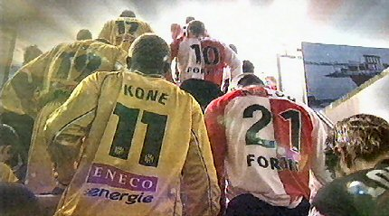
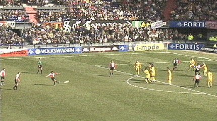
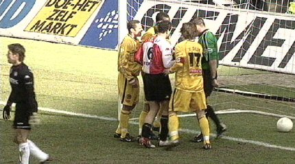
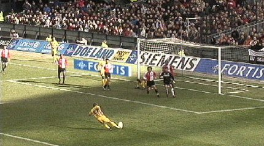

|
Feyenoord - Roda JC (4-1) 13 maart 2005 |
Feyenoord - Roda JC (4-1) 13 maart 2005

De spelers komen uit de catacomben.
Al snel in de wedstrijd ontsnapt Feyenoord aan een
achterstand als Kone
de bal met een prachtige omhaal over doelman Lodewijks wipt. Östlund kan
de bal nog net met een eveneens fraaie omhaal van de doellijn halen.

Vrije trap van Onjo wordt van richting veranderd: 1-0 (6').
Castelen kopt 2-0 binnen, (22').
Östlund (e.d.) schuift de bal net iets eerder over de lijn dan Kone: 1-2, (47').
Cissé is zeer verontwaardigd dat zijn doelpunt afgekeurd wordt
wegens
buitenspel.

De protesten bij scheidsrechter Vink.

Oordeel zelf. Hier drukt Bodnar af waarna Cissé vanuit de kluts scoort.
Kah maakt een overtreding op Onjo waarna Feyenoord een iets gemakkelijk
gegeven penalty krijgt.
Kuijt verzilvert de strafschop: 3-1, (68').
Kalou soleert op mooie wijze naar 4-1, (84').
Roda
zakt na deze nederlaag naar de 11e plaats en heeft inmiddels een
negatief doelsaldo. De ploeg moet nu omlaag kijken omdat het gevaar voor
nacompetitie stilaan reëel wordt. De volgende tegenstander is
FC Den-Bosch. Als hier geen punten worden gepakt zijn de rapen gaar!
Voor een fotoverslag van Feyenoordzijde:
www.ego2.nl